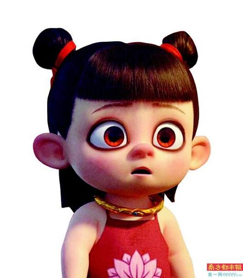

原图

blur模糊
模糊度数:0
样式的Css代码:filter:blur(0px)
brightness亮度
亮度度数:100%
样式的Css代码:filter:brightness(0%)
contrast对比度
对比度度数:100%
样式的Css代码:filter:contrast(0%)
grayscale灰度
灰度度数:0%
样式的Css代码:filter:grayscale(0%)
hue-rotate 色相旋转
色相旋转度数:0deg
样式的Css代码:filter:hue-rotate(0deg)
invert 反向输入图像
反向输入图像度数:0%
样式的Css代码:filter:invert(0%)
opacity 透明度
透明度度数:100%
样式的Css代码:filter:opacity(0%)
saturate 饱和度
饱和度度数:100%
样式的Css代码:filter:saturate(0%)
sepia 转为深褐色
转为深褐色度数:0%
样式的Css代码:filter:sepia(0%)